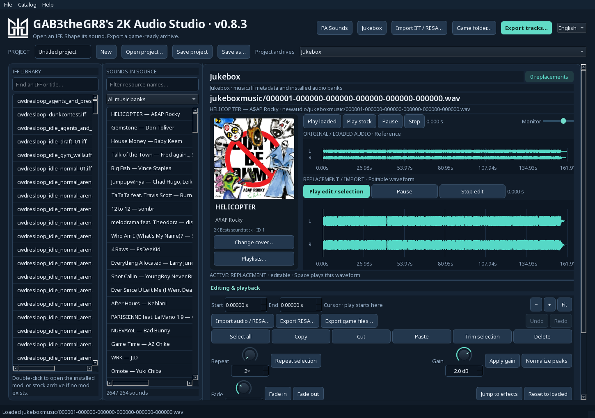
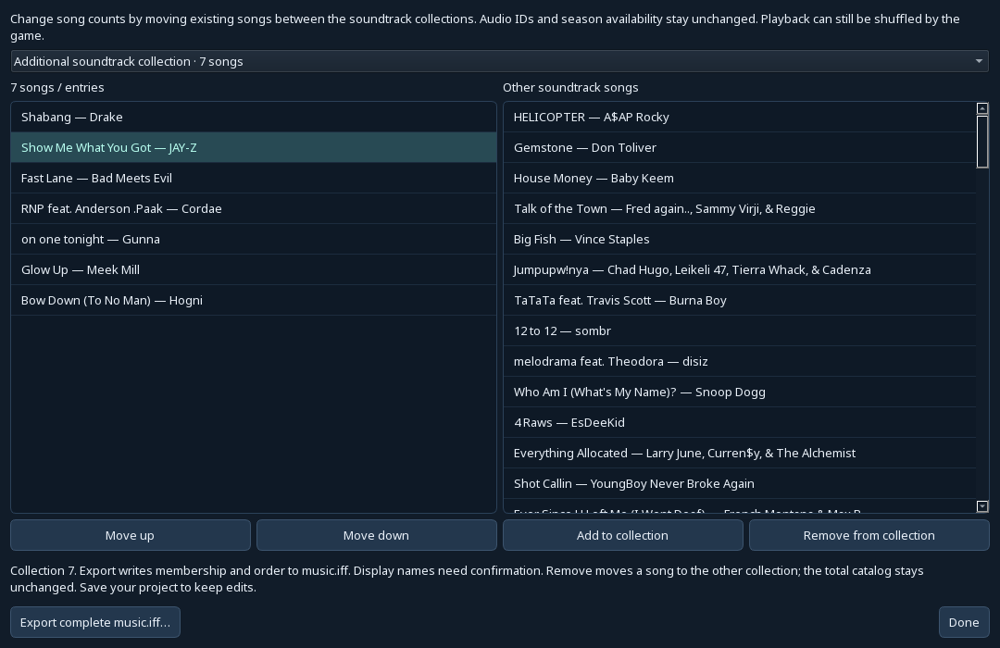
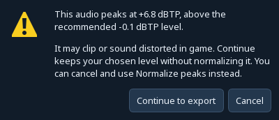
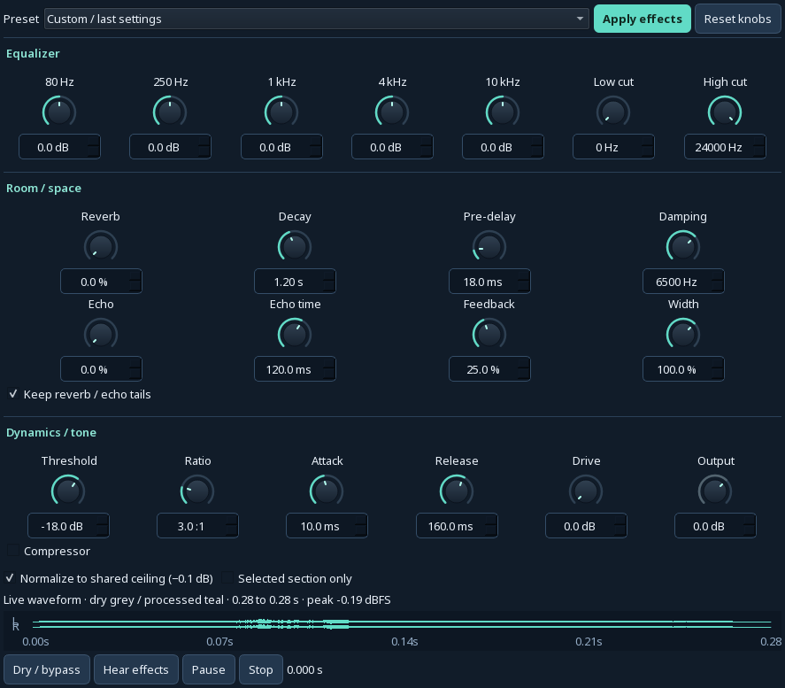
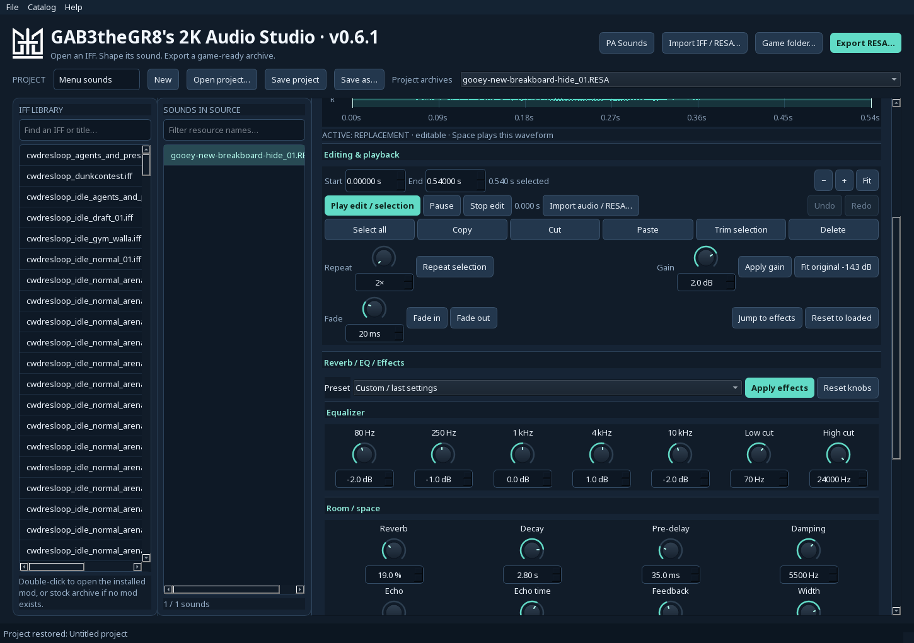

GAB3theGR8’s
2K Audio Studio
Hear the original. Shape the replacement.
Export an IFF or an individual RESA.
Open a 2K audio archive, import your own recording, and edit its waveform with trim, repeat, copy and paste. Keep multiple replacements together, then export the selected archive with its original filename.
License key from Gabe required. Activation approves one Windows user on one computer. Connect for first activation; an approved installation can work offline for up to seven days. Audio stays on your PC.

See both waveforms
See the original loaded waveform above your imported replacement. Normalize quiet and loud replacements to one shared −0.1 dBTP ceiling, independently of the loaded original. Edit below while keeping the original visible. Click either waveform to activate its cursor and selection. Space plays or pauses the active waveform; clicking another position during playback seeks. Each waveform also has independent transport controls.
PA Sounds by team
Browse 5,676 PA music clips by team, see recovered cue names and hashes, and export only edited native .wav files with their exact filenames.
Export an IFF
Save the complete archive, such as sfx_inside_001.iff, with your replacements and every untouched resource checked. Export RESA saves any selected sound from an IFF, PA library or standalone import. It includes current unapplied waveform edits, with the original filename suggested.
Detailed features, release notes & technical reference (English)
Replace your Jukebox soundtrack
Choose Jukebox to browse the main soundtrack and Park music from your installed game. See the selected track’s cover, title and artist beside both waveform transports. Import an MP3 to read its embedded tags and artwork, or edit those details yourself.
Export one or multiple tracks together. Every bundle includes the complete music.iff, preserving all other track records, audio in its exact newaudio/jukeboxmusic/ or newaudio/jukeboxmusic_park/ folder, and selected edited artwork at its original native path. Artwork exports need in-game confirmation. Stock recordings are read from your game and do not increase the download size.
For a single PA sound, Export game files writes PA Export/newaudio/eventmusic/<filename>.wav. Save Jukebox work in a project and reopen it with Studio 0.8.0 or later.
Arrange soundtrack collections
In Jukebox, click Playlists beneath the cover. See each collection’s song count, move existing songs between the two soundtrack collections, and move tracks up or down within a collection. Audio IDs and season availability stay unchanged. Export the complete music.iff without re-exporting recordings, or bundle it with selected audio.
The game’s exact collection display names still need confirmation, so Studio uses neutral labels. Removing a song moves it to the other collection; it remains in the total soundtrack catalog. This changes collection sizes within the existing catalog, rather than adding new audio slots. Playlist behavior needs an in-game test.
World/Park playlist arrays are extracted for reference and remain read-only. Personal MyPlaylist is stored in the game profile and is managed in game. Studio does not modify executable files or profiles. New Jukebox projects require Studio 0.8.0; older projects remain readable.

Keep your chosen export level
Peak warnings now offer Continue to export and Cancel. Continue keeps your chosen level without forced normalization. Cancel leaves edits and output files unchanged. You can still use Normalize peaks whenever you want. Invalid audio and native-format errors remain checked.

Shape the room and speaker sound
Scroll the right-hand editor to the EQ, room / space and dynamics sections beneath the waveforms for five-band EQ, room reverb, slap echo, stereo width, compression and speaker saturation. Drag teal knobs vertically and watch the live dry/processed waveform overlay update. Type exact values below each knob. Previewing leaves your audio unchanged until Apply. Start with indoor, outdoor, gym, arena, PA or distant-crowd presets. Compare dry and processed previews, then apply an undoable edit. Normalize to the shared peak ceiling is enabled by default.

One continuous editor
Editing, EQ, reverb and dynamics are assembled beneath the waveforms. Scroll the right-hand panel to reach every section, with no effects tabs or separate effects window. Import standalone .RESA files or full IFF archives. Indexed menu sounds, including newbreakboard, retain rebuilt seek tables when edited. Older converter-made RESA sounds now receive a fresh native header on export, fixing the unsupported channel layout or codec error.

Updates built into Studio
v0.8.2 fixes the missing Python DLL popup after updating. The installer restarts Studio with a fresh temporary runtime, including when updating from an older client. Projects and activation remain separate from the installation. The abandoned main-soundtrack removal experiment is not included.
v0.8.2 fixes Windows access-denied errors caused by reusing an installer filename. Update downloads now use separate folders and retry temporary Windows file locks. If an older build is blocked, save and close Studio and run the installer above manually.
Studio checks for signed updates after launch and daily while open. Choose Update and restart when a new version is available. Save your project before restarting; activation and settings stay in place. You can also use Help → Check for updates, or disable background checks in the Updates menu. Users of earlier builds need to install this release once to move to the new public download host. Activation and saved projects carry over; future updates will use this location.
The PA catalog now has 533 additional team links: 2,721 recordings have candidate team associations, including 449 previously unassigned recordings. The complete library remains 5,676 native clips.
From sound to game archive
- Run the Windows installer once, then open GAB3theGR8’s 2K Audio Studio from your Start menu.
- Choose Import IFF / RESA to open a standalone RESA sound or find audio inside a local archive, or set your game folder and double-click an archive in the library.
- Select a sound and audition the loaded or stock version. For PA music, click PA Sounds and select a team.
- Import a replacement, select a waveform section, and make your edits.
- To export just the selected sound from any source, choose Export RESA beside the audio import button (or press Ctrl+Shift+E).
- For IFFs, choose Apply to IFF, then Export IFF. For PA music, choose Apply PA sound and Export PA team to export only edited sounds into a team-named folder containing
newaudio/eventmusic/*.wav.
Use the visible New, Open project, Save project and Save as buttons to keep EuroLeague, NBA and other projects separate. Each .2kaudio project can hold multiple IFFs, pending replacements, the current unapplied waveform, selections, effect knobs and labels. Switch IFFs through Project archives. Older single-IFF projects remain readable. Existing catalog-label JSON files can be imported through the Catalog menu.